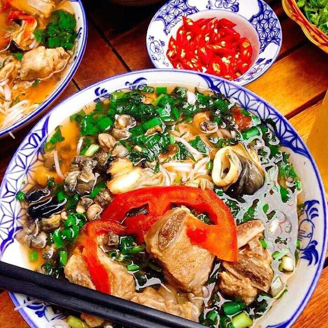

Bún Ốc Sường Sụn
Bún ốc là thứ quà kinh điển của đám lê la quán xá đầu hè, góc chợ. Nhất là khi tiết trời đang oi ả, cái vị chua chua của nước bún ốc và cái mát của sợi bún dễ dàng làm các cô, các chị mê quà vặt say như điếu đổ. Cũng như phở, bún ốc được bán, được ăn từ sáng đến tối, chẳng hề gì.